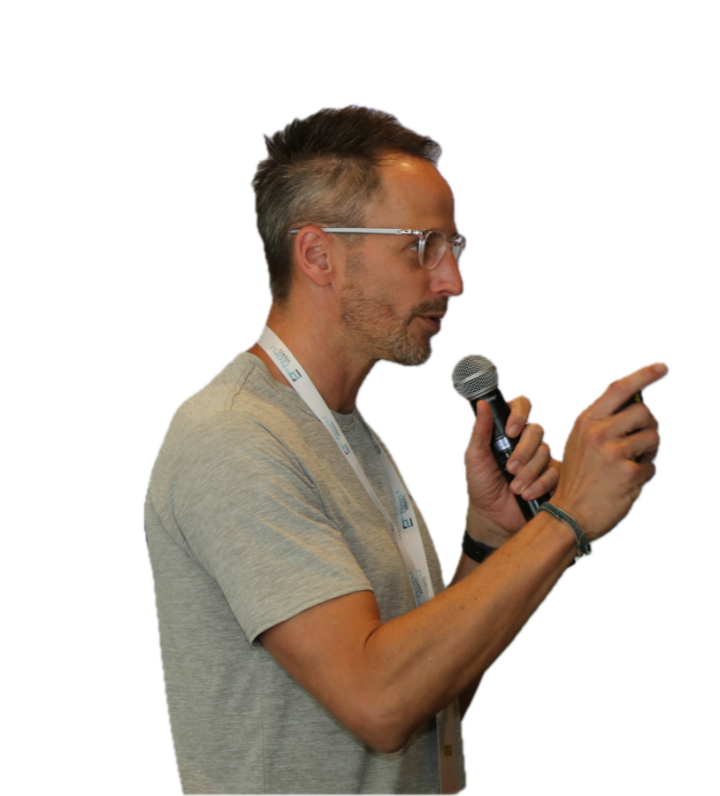

Comer bien exige mucho más que saber de nutrición.
La compra, tus horarios, el hambre, el descanso, la familia, el entrenamiento y las prisas influyen en cómo comes cada día. En la primera consulta los ponemos sobre la mesa para identificar qué merece atención y por dónde conviene empezar.
Pablo Quintero
Nutrición metabólica y longevidad
Nutricionista y Doctor en Nutrición

Solicitar primera consulta
La primera consulta permite entender tu situación y valorar cuál es el mejor camino de trabajo.
Rambla de Santa Cruz, 131 - 38001 – Santa Cruz de Tenerife
Enfoque
Menos soluciones rápidas.
Más salud que se mantiene.
No trabajo con dietas universales, reglas imposibles ni soluciones de una semana. La alimentación importa, pero forma parte de un conjunto más amplio: actividad física, entrenamiento, descanso, horarios, entorno y relación con la comida.
El objetivo es construir una estrategia que encaje en tu vida real y te ayude a tomar mejores decisiones con el tiempo.
Áreas de atención
La consulta se centra en tres áreas principales
Salud metabólica y salud a largo plazo
Para personas que quieren mejorar su alimentación, composición corporal, energía, actividad física y factores de riesgo metabólico.
Podemos trabajar sobre estructura de comidas, saciedad, calidad de la alimentación, entrenamiento, recuperación, sueño y hábitos. Cuando resulta útil, consideramos analíticas y pruebas que ya formen parte de tu atención sanitaria.
El foco no es una intervención perfecta durante unos días, sino cambios con sentido que puedas mantener.
Salud familiar y crecimiento
Acompañamiento para niños, adolescentes y familias cuando hay preocupaciones relacionadas con alimentación, peso, crecimiento, actividad o hábitos.
El trabajo se centra en el entorno familiar: rutinas, comidas, actividad, descanso y bienestar. Evitamos culpabilizar, etiquetar o imponer dietas restrictivas.
Cuando es necesario, la atención se coordina con pediatría u otros profesionales.
Nutrición deportiva
Para deportistas y personas activas que quieren rendir mejor, recuperarse con más rapidez y sostener su energía a lo largo de temporadas de entrenamiento exigentes.
Trabajamos la ingesta energética y de macronutrientes ajustada a tu carga de entrenamiento, hidratación, nutrición pre y post-entrenamiento, y composición corporal enfocados en optimizar tu rendimiento.
Estrategia ajustada a tu deporte, tus horarios de entrenamiento y tus objetivos de rendimiento o competición.
Cómo trabajo
Un proceso adaptado a tu situación
La primera consulta no empieza con un menú. Empieza por entender qué está ocurriendo: tus objetivos, historia relevante, alimentación, hábitos, actividad física, descanso y contexto clínico. A partir de ahí, definimos prioridades realistas y un plan de acción que podamos revisar y ajustar.
Valoración
Revisamos tu situación actual, objetivos, antecedentes relevantes, alimentación, actividad y contexto.
Prioridades
Elegimos los cambios que tienen más sentido para ti. Menos reglas; más claridad sobre qué hacer y por qué.
Programa de seguimiento
La clave del éxito: 12 semanas en las que te acompaño semanalmente con seguimiento individual, información clave y apoyo constante.
Autonomía
El objetivo es que desarrolles criterio y herramientas para cuidar tu alimentación y tu salud a largo plazo, sin depender de planes rígidos.
Esta consulta…
Puede encajar contigo si
- Quieres mejorar tu salud metabólica, hábitos o composición corporal sin recurrir a soluciones extremas.
- Te interesa comer y entrenar de forma que apoye tu energía, rendimiento, recuperación y salud futura.
- Tienes dudas sobre cómo adaptar tu alimentación a una situación digestiva o médica ya valorada.
- Buscas apoyo profesional para mejorar la alimentación y los hábitos de tu familia.
- Estás dispuesto a trabajar con cambios progresivos, prácticos y sostenibles.
Puede que necesites otro tipo de atención si
- Tienes síntomas nuevos, intensos o de alarma que aún no han sido valorados médicamente.
- Buscas un diagnóstico médico, una prescripción farmacológica o sustituir seguimiento médico.
- Necesitas atención especializada urgente por un trastorno de la conducta alimentaria, desnutrición, enfermedad renal o hepática avanzada, cáncer activo o una situación clínica compleja.
En estas circunstancias, puedo orientarte para coordinar o derivar al recurso adecuado.

Sobre mí
Ciencia, criterio y vida real
La alimentación rara vez se decide leyendo un estudio científico. Se decide frente a una estantería, con hambre al final del día, el dulce después del salado, durante una comida de finde o cuando apenas queda tiempo para pensar.
Llevo más de veinte años vinculado a ese mundo, entre investigación e industria alimentaria. He investigado y publicado sobre nutrición, y conozco los alimentos desde su desarrollo y producción hasta la forma en que se comunican y venden.
En consulta, utilizo esa perspectiva para ayudarte a orientarte entre tanta información: qué merece atención, qué requiere prudencia y qué puedes dejar pasar.
También conozco en primera persona los retos de sostener hábitos con trabajo, familia y actividad física. Eso me ha enseñado a valorar las estrategias que se pueden repetir, ajustar y retomar cuando una semana se complica.
Nutricionista y Doctor en Nutrición por la Universidad de Navarra.
Doctor en Nutrición. La consulta se centra en nutrición y no sustituye la valoración, el diagnóstico ni el tratamiento médico.
Da el primer paso
Si quieres mejorar tu alimentación, salud metabólica o hábitos con un enfoque individualizado y basado en evidencia, ponte en contacto. La primera cita sirve para conocer tu situación, responder tus dudas y decidir si tiene sentido trabajar juntos.
Solicitar primera consulta
Preguntas frecuentes
Si tienes analíticas recientes o informes médicos relevantes, puedes traerlos a la consulta. Los utilizaremos únicamente cuando ayuden a orientar decisiones nutricionales. La consulta nutricional no sustituye la valoración médica.
No. El peso puede ser un objetivo relevante para algunas personas, pero no es el único indicador de salud. También trabajamos alimentación, composición corporal, actividad, rendimiento, recuperación, salud metabólica, salud digestiva y hábitos.
No utilizo un enfoque único ni menús rígidos como punto de partida. El plan se adapta a tus necesidades, preferencias, horarios, contexto familiar y objetivos. Cuando es útil, puede incluir ejemplos de estructura de comidas o recursos prácticos.
Sí, mediante un enfoque centrado en la familia, el crecimiento, los hábitos y el bienestar. La participación de padres, madres o tutores es necesaria y, cuando procede, se coordina la atención con pediatría u otros profesionales.